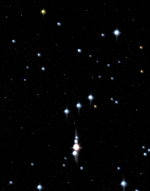
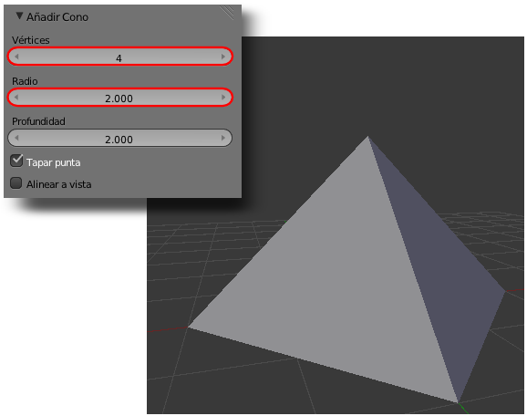
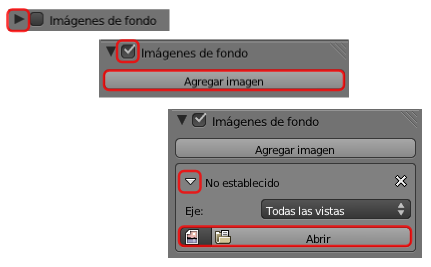
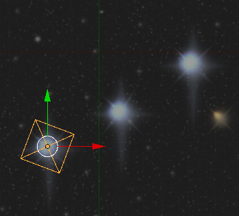
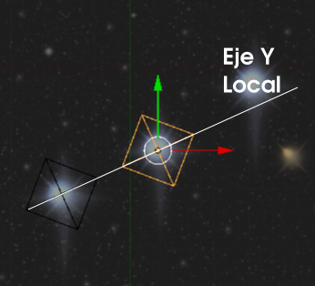
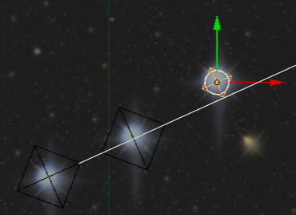
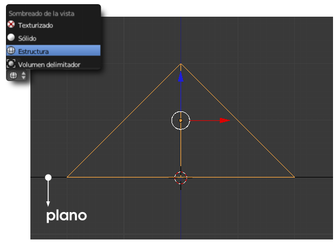
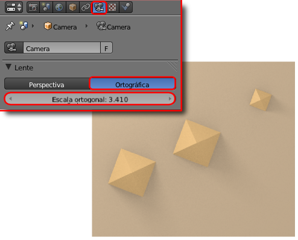
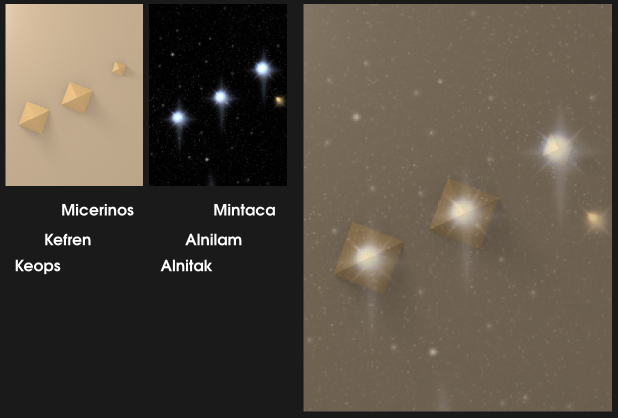

Material didáctico: Egipto y Orión
Es bien conocida la teoría de Bauval que relaciona las pirámides fundamentales de Egipto (Keops, Kefren y Micerino) con la posición de las tres estrellas del llamado Cinturón de Orión. Independientemente de la cuestionable rigurosidad científica de esta teoría es, sin duda, una buena excusa para poner en práctica lo aprendido.
La propuesta en esta ocasión está menos relacionada con las ediciones paramétricas que nos llevaron a introducir datos exactos para los desplazamientos en Material didáctico: Estructura molecular o de los giros en Material didáctico: Círculo cromático. En realidad Blender es una herramienta diseñada para un trabajo más fluido y menos riguroso ya que no pretende ser un software CAD (Computer Aid Design).
Además del render necesitamos para rematar nuestra presentación una foto del Cinturón de Orión. Recurrimos a un banco de imágenes y encontramos una fotografía que se adapta por completo a nuestras necesidades.
Constelación Orión
|

Constelación Orion // Autor:Photodisc // Licencia: CC BY-NC-SA 3.0 (Creative Commons)
|
Comenzamos con la escena por defecto de Blender a la que le eliminamos el cubo de inicio ("Supr") y añadimos un cono (Agregar/Malla/Cono) para crear la primera pirámide. En sus opciones variamos Vértices a 4 y Radio a 2.
Ahora vamos a aprender un nuevo recurso para ayudarnos a diseñar. Usaremos la imagen descargada como fondo en el diseño (no para el render, sólo como ayuda visual). Nos dirigimos al cuadro de Propiedades ("N") y buscamos una botonera llamada Imágenes de fondo; la desplegamos con el pequeño triángulo, activamos la opción y pulsamos Agregar imagen. Tras esto desplegamos el panel No establecido para usar el botón Abrir e ir a buscar nuestra imagen de referencia.
Siempre que estemos en una vista ortográfica se verá la imagen; también desde el punto de vista de la cámara "NumPad 0" aunque es seguro que se mostrará distorsionada porque las proporciones no son las mismas (si cambiamos Resolución X a 1000 y Resolución Y a 1275 el problema se solucionará ya que estas son las medidas de la imagen).
Pasamos al modo de sombreado Alambre ("Z") para tener una mejor visión; luego nos colocamos en vista superior ("NumPad 7") y ortográfica y rotamos ("R") (20º puede ser una buena opción) y escalamos ("S") para conseguir lo que tenemos en la siguiente imagen.
Duplicamos ("Shift_D") esta pirámide y sin variar el tamaño la colocamos sobre la segunda estrella. Para garantizar la continuidad de las diagonales lo mejor es hacer un desplazamiento en el eje Y local ("YY"). La orden "YY" es porque no hemos cerrado la operación de duplicar. En tal caso habría que hacer "GYY".
La tercera pirámide la obtenemos duplicando ("Shift_D") y después escalando ("S") para que quede con una apariencia como esta.
Y ya tenemos las pirámides dispuestas según la teoría de Bauval.
Ahora añadimos un plano a modo de suelo y desplazamos en Z (azul) las pirámides para que se apoyen en él. Pero como no siempre los saltos de unidad con "Control" pulsado se ajustan a lo esperado, es muy habitual trabajar en sombreado Alambre y hacer el ajuste a mano desde un punto de vista frontal ("NumPad 1", por ejemplo) y en vista ortográfica ("NumPad 0" si estuviera en cónica). El motivo por el que hay que pasar a ese tipo de sombreado es porque el plano carece de grosor y no se aprecia en el punto de vista escogido cuando estamos en sombreado Sólido.
Para el render:
- Aplicamos el color E7BF84 a las pirámides y C7B092 al plano.
- Configuramos una iluminación básica.
- La cámara la colocamos desde arriba; primero "NumPad 7" y después "Control_Alt_NumPad 0". La configuramos para un render Ortográfico y determinamos el valor de Escala ortogonal. Además es posible que tengamos que atender a otros asuntos para encuadrar al gusto.

Cuando mostremos esta imagen superpuesta a la descargada del banco de Imágenes o, simplemente a su lado, tendremos un bonito recurso didáctico.
